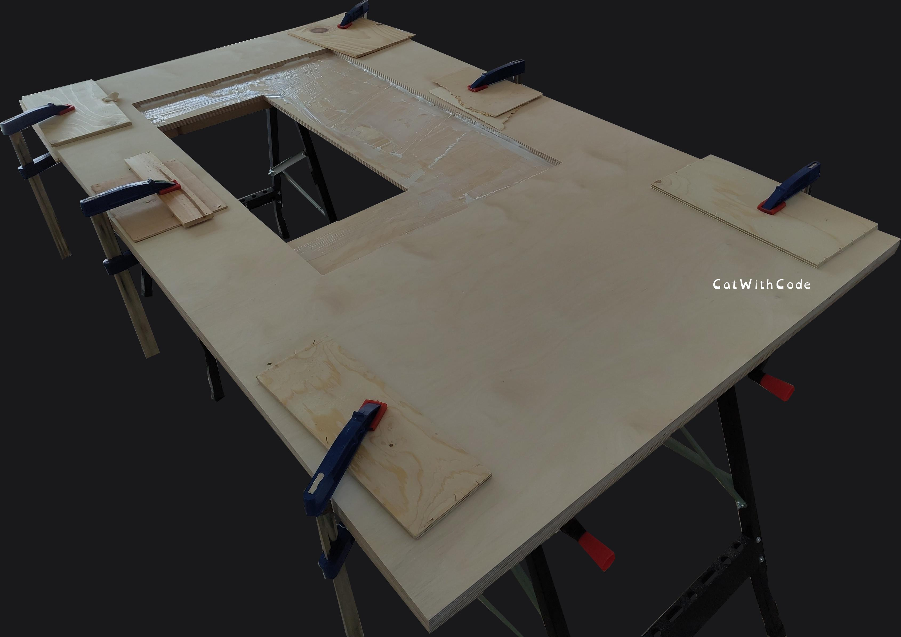
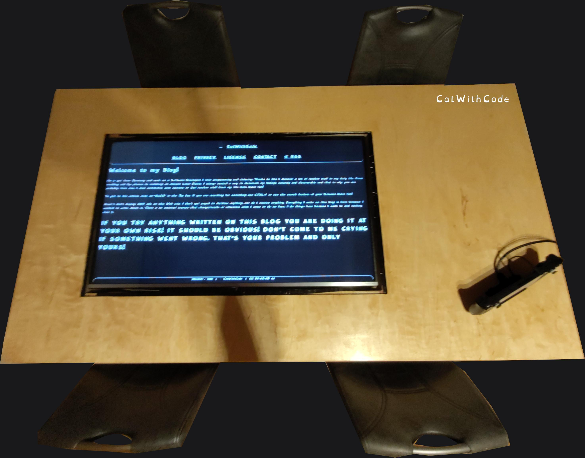

Yeah, I have build my own boardgame TV table, better known as the DND-TV-Table. If you want to follow me, you can use my model for measurements. The units are real life centimetres. And, sorry not sorry, it"s a Blockbench model, so it can't be used for ordering parts or building things directly, but it can help a lot. The TV I used was the SHARP LC-43CFG6452E. I had to remove the rebuild model of the TV from the Blockbench model. You will need to model your TV yourself. You only need to do this if you have a different TV, which is very likely :D. The holes are made to fit most TV's with a little bit of cutting. All rights reserved! Don't share or sell it! IT IS FOR PERSONAL USE ONLY! I WILL ENFORCE MY COPYRIGHTS!
Now that that is explained, I will show explain a lot an then show many pictures with some comments on what I have done. Most of the moving was done with my husband because of the weight of the wood. To get the finished table without the foods into our flat, we needed a moving service because of the weight.
The materials I used were water resistant high quality multiplex wood, 100 grid sandpaper for glue and 200 grid for oil, tempered glass, water resistant wood glue and oil based polyurethane. The screws and mounting hardware were what I had on hand and the table legs were bought locally from a furniture store. I used apoxy to improve the bond between the screw holes and the wood and it worked really well. Some of the screw holes were covered with apoxy and I had to drill them out to be able to use them (Dont just try to push the screws in, you will force the apoxy down the hole and push the holder out, ask me how I know >.>. Also, do not use a drill! Getting the screws in with it is fine, but the final tightening must be done by hand or you will knock the heads off, ask me how I know x.x). The wood and glass was a custom order from a specialist cnc wood, metal and glass cutting company. I needed a special drill that could drill from the top like a cnc router to make the glass flush with the surface. With everything included except my own labour hours (which were about 3 weeks of work (drying times) summed up to about 10 hours of manual work and about 10 hours of research, planing, buying and organising), everything cost about 1200 euros. The table is "180cm x 100 x ~73cm" and weighs about 100kg. About 83kg of wood, 2kg of glue and oil, about 5kg for the glass and a little over 10kg for the TV and its cables. ALWAYS USE A VERY GOOD PAINTER'S MASK! WOOD DUST AND PETROL FUMES ARE VERY BAD FOR YOU!
The first thing we did was to check that I had ordered everything correctly. I did :P.
Then I milled out the resting area for the glass.
After a lot of careful work and securing the cutting area with wood peaces to prevent the drill from slipping into the table top itself, I got about 1mm between the top of the glass and the table top (perfect for some sort of seal to at least reduce the amount of water that could get in in case of an accident.
Now it is time to assemble the 4 panels into one (and yes, I know I accidentally used glue on the open TV part of the bottom panel ^.^). I could not order such a large piece of wood. So I ordered 4 panels and glued them together. Each peace was sandpapered, glued, placed on top of each other and clapped together with wood trash to protect the table wood. I waited 24 hours between each panel to give the glue as much pressure and time as it needed. I also put weight on the tops of the last two plates because they were a bit warped. I sanded all sides with 200 grit sandpaper, but should have used a belt sander. Not all the panels are perfectly aligned on all sides. Not too bad but would have been nice.
Finally, everything together, we turned the plate over and oiled the bottom of the table 2 times. Flip it over again and do the same for the top and sides. I used a brush and applied thick layers. I sanded the surface each time. I left the oil to dry for 48 hours each time and always wiped off the excess oil immediately after applying. I waited about 4 days after the last layer. At the time of writing, the table still smells a little, not like the petrol in the oil, just the oil, and should go away in about 10 days (this is how long the oil needs to be in its final state).
And done. I sanded the Sureface one last time. I should have used clean and finer sandpaper for the final sanding..
I drilled holes for the legs and apoxied and hammered in the screw mounts. The surface was sanded to give the glue as much chance to work as possible. The legs were about 13 cm from the walls of the legs to the outside of the table.
After 2 hours (with the legs as wights on top) I screwed them in (after drilling some of the glue out) and flipped the table over. One Screw head riped off and I will always know it is there and it will hunt me.
I used many washers and mainboard brackets to get the TV to sit perfectly flat, the corners of the caseing were perfect for this. The panel is directly behind the screw mounts, so the distance of the mounts going in had to be very short, hence the about 5 washers each time lol.
And after a bit of clean-up, the table was done. At the time of writing we had not used it yet, but im very pleased with the result. Oiling the wood makes such a diffrents in look and sturdiness. So much better and like a bought dining table!
I hope you like my DND-TV-Table too!
{kind=link}
{kind=link}
{kind=link}
{kind=link}
{kind=link}
{kind=link}
{kind=link}
{kind=link}
{kind=link}
{kind=link}
{kind=link}
{kind=link}
{kind=link}